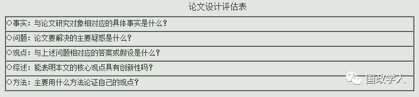

收录于合集

简
**李少军
**
中国社会科学院世界经济与政治研究所国际政治研究室主任、研究员，世界经济与政治研究所学术委员会副主任，中国社会科学院研究生院教授。主要代表著作《国际政治学概论》
撰写国际关系论文，研究模式没有一定之规。但要做到 逻辑自洽，结构合理 ， 特别是要有所创新 。
必须遵守几个规范
（1）研究对象要对应明确的国际关系 事实 ；
（2）有对事实的疑惑作为 研究问题 ；
（3）有对问题的明确答案即 核心观点 ；
（4）有适宜的 文献综述 证明自己的核心观点具有新意与研究价值；
（5）有适宜的 方法 以实现论证核心观点的目的；
（6）有明确 结论 构成对国际互动现象的新认识并产生政策启示。
前五点是基本要求，第六点是前五点做好的结果。
研究对象的确定
国际关系研究对象，根本特点是与现实的国际互动密切相关 。演绎的每一步及其最终结果，必须与可以观察的现实有对应关系。即使是进行抽象的概念或理论探讨，也是对于现实的概括与解释。 现在的一些国关论文人们读不懂，一个可能的原因就是理解不了其论证过程或结论与现实的国际互动有怎样的联系 。 这种“玄之又玄”的研究，不是值得倡导的模式 。
从规范的角度讲， 进行国际关系论文的设计，首先需要明确自己的研究是与哪些具体事实相关 。作为对象的国际关系事实，概括地讲，包括国际行为体本身，行为体的观念、政策与行为，行为体的互动和互动所导致的结果。研究者选择研究对象，可以是单一或多个（一组）事实，历史事实或正在发生的事实，作为实在的事实或作为文本的事实，具有物质属性的事实或具有观念属性的事实。选择的根本宗旨是要实现研究的创新。
四个环节中的创新 **
**
选择事实，实现研究的创新，可以体现在论文写作的四个环节中，即描述、解释、价值判断与提出对策。
（1）描述 ——通过观察事实，有新的发现，并把这种发现表述出来。
有两种情况：第一， 通过现象观察，发现并描述了新的事实。 【例如，新闻记者进行突发事件的报道，国际机构就重大事态（如核问题、人权问题等）进行核查并提出研究报告，专业研究者通过阅读文献、档案发现新事实并做出描述等。】第二， 在已知事实的基础上，发现并描述了事实的新的关系、属性、特点、变化趋势，特别是相关关系与因果关系等 。【例如，描述国际格局的新结构、大国关系的新特点、国家对外政策的新动向、全球治理的新的作用机制等。在国际关系研究中，对双边关系、区域形势、国别政策走向等问题的研究，通常都应包括对机制、结构、趋势的新描述。】
描述的创新往往会带来解释的创新。 仅仅把新发现描述出来是不够的，还必须做出解释。
（2）解释 —— 对于事实的机理进行系统说明 。针对事实的“为什么”。有两种情况： 第一，对观察事实的解释。 例如对相关关系与因果关系的解释。【现实主义者观察国际冲突现象所提出的有关权力政治的解释，自由制度主义者观察相互依赖现象所提出的有关国际合作的解释，研究某一类机制（诸如冲突解决、一体化进程、经济制裁等）时需要的对各种影响因素的分析。】 第二，对社会意义的解释 。例如对外交政策意图的解释。【它主要针对的是国际关系事实与文本中所蕴含的主观因素，包括事实发生的社会意识背景，国际互动所形成的集体意向，以及国际关系文本中所内含的作者原意等。】由于国际关系事实都具有社会意义，因此进行国际关系研究始终需要这种解释。建构主义的研究就属于这个范畴，即温特有关霍布斯文化、洛克文化和康德文化的论述。
在解释的环节进行创新，就要提出与此前解释不同的东西。 通常，人们提出全新的解释是困难的，能够在已有解释基础上再向前走一小步，例如弥补已有解释的不足，或是纠正已有解释中的缺陷或错误，那就是难得的创新了。
如果能 提出具有新意的系统说明，提出一组相互联系的命题，那就实现了理论的创新 。在国际关系研究中，理论的创新通常具有比较重要的地位。例如，如果研究者能够对事实发生的原因、属性、运作机制和国际影响做出系统的新说明，那就具有了理论创新的意义。
（3）价值判断 ——对事实进行好坏的判断。大到国际格局的结构，小到一个国家的身份认同乃至一项具体的对外政策均涉及价值的评估与取舍，尤其涉及国际伦理问题时。例如冷战结束以来围绕人道主义干涉而不时发生的国际争论。在国际关系研究中进行价值判断就是 从学理的角度进行正当性的阐释 。【例如，说明什么样的事态符合国际正义，怎样的格局有利于世界和平，怎样解决人权问题，怎样看待民主的价值，怎样做一个负责任大国，国家应怎样遵守国际规范等。】关键是要有新意，讲出此前学界未讲过之理由，成为政策选择的依据。
（4）提出对策 ——建议政府应当怎样做。在这个研究环节进行创新，就要基于事实的判断与价值选择，提出具有新意的建议，或是针对已有对策提出新的分析与阐释。
从学理研究的角度讲， 解释的创新应该居于最重要的地位 ，因为没有解释的创新，就没有理论的创新，也就没有国际关系学科的发展。因此，在设计论文选取研究对象时，应首先思考能否提出新的解释。以此作为标准，在观察事实时，可以侧重思考对国际互动的原因、运作机制、影响因素等有没有疑惑，对所发现的相关关系、因果关系有没有进一步解释的前景。
以创新为目标选取事实，适当性标准只有一个，即发现了尚未解决的疑惑。如果有关事实的方方面面都清清楚楚，那就不存在创新的可能和进行研究的必要。只有存在疑惑，人们才能够提出具有研究价值的问题。
提出问题
研究问题，指学术界有待解决的疑惑或争论。不单是需要解答的疑问，还具有规定研究出发点和所要达到目的的属性。我们需要明确撰写学术论文与编著教科书在宗旨上的不同：编教科书是综述、梳理已有的知识，而撰写论文则是要通过解决问题创造新的知识。
研究问题处于已知领域与未知领域相交的部分，相对已知的知识而言，应该是未知的东西，但并不是完全的未知。研究者提出问题所要探求的未知，必须是与已知有联系的东西。研究者能找到两种领域具体的交界之处，就有可能提出有意义的研究问题。
“是什么”、“为什么”和“做什么”
“是什么”与前述的“描述”相对应。在国际关系研究中， 一个事实是否存在，有怎样的形态、属性、影响和变化趋势，都需要通过描述来解决 。例如，《美国利益面临五大威胁》一文，所要解决的就是一个“是什么”的问题。除了对现实问题的描述，“是什么”还涉及对理论概念的描述。例如《国际政治中的权力是什么？》所描述的就是一种概念化的事实，即一个行为体使他者做原本不会做之事的能力或关系机制。在有关概念的研究中，在运用概念阐释有关现实的“为什么”的同时，也需要回答它自身“是什么”。
“为什么”与前述的“解释”相对应。比如，发问“北约为什么要东扩”，“美国为什么会把战略重心转向东亚”。针对冷战后现实主义不再具有解释力的批评，肯尼思·沃尔兹（Kenneth N. Waltz）2000年在《国际安全》杂志发表了题为《冷战之后的结构现实主义》的论文，讨论的核心问题，就是为什么冷战后现实主义仍然具有解释力。
“做什么”与前述的“价值判断”和“对策建议”相对应。由于在国际关系研究中进行价值判断就意味着赞同或反对某种行为体、互动行为、政策或现状，而对策建议则总是与价值判断相联系，因此这两者就研究问题而言往往是分不开的。例如，《美国不同的大战略观》一文所进行的战略观的比较，就包含价值的取舍和美国政府应当“怎样做”的建议。
提出问题的途径中最基本的来源有两个，一是现实，二是文本。 在这里，现实是指实际发生的各种国际关系事态，而文本是指描述、解释现实的各种成果。对于国际关系研究者来说，观察现实和阅读文本都是必须做的事情。观察现实可以得到有关真实的信息，而阅读文本则可以得知有关真实的描述、解释、价值判断和应对策略。如果人们发现这两者不一致甚至相矛盾，就会产生疑惑，并进而提出有待研究的问题。
提出研究问题的几个途径
第一， 观察事实，进行横向与纵向比较。 人们的观察通常会从个案开始，关注与他者不同的事实，或是理论不能解释的事实，由此提出问题。进行这样的观察，人们可以横向地比较同类的事实，以探求事物的新属性；也可以纵向地进行历史的比较，以探求事物的发展变化。前者是由此及彼，后者是由表及里。在国际关系研究中，尽管坚持实证方法的人青睐大样本的统计分析，但直接做这样的研究是困难的，因为不知道什么样的事实可以做定量研究。通过对个别事实进行深入观察，即个案研究，就有可能发现进行统计分析的路径。这也是一个从点到面的过程。通过这样的观察提出问题，人们重点应关注现有理论不能解释的东西，这样就能从发展理论的角度进行创新。
第二，阅读文本，进行理论、概念的比较。 人们阅读文本，了解一个理论概念的时候，总会对比已知的其他文本和已知的事实。对理论、概念进行判断，固然要看逻辑是否自洽，但最关键的还是要看与事实是否相符。通常，得到一定认可的理论总是能解释一定的对象。在阅读文本时产生疑惑，通常是因为有些事实用现有的理论不能解释。当研究者发现一种理论不适用时，就会思考是不是有其他理论可以解释。当发现没有适当理论可以解释时，就需要针对已有理论提出问题。这种问题可以是颠覆性问题，也可以是修正和补充的问题。对于一般的研究者来说，针对已有理论的弱点、缺点和遗漏进行增强、修正、补充，以便把原有理论再向前推进一小步，是很值得做的事。当然，为了能够提出真正有意义的理论问题，研究者必须对相关事实和文献有全面和深入的了解。
第三，诠释意义。 研究者提出“为什么”的问题，通常都涉及对意义的解释。例如，提问小布什为什么坚持进行伊拉克战争，伊斯兰极端势力为什么与西方为敌，日本的右翼政客为什么坚持参拜靖国神社，中国为什么能够和平崛起，都是涉及行为体意图的问题。
第四，变换角度，探讨新的研究思路。 当研究者发现传统的研究路径不能有效解决问题，或是发现可以借鉴其他学科有效方法时，就可以跨学科进行研究途径的借鉴。在国际关系研究中，人们借鉴经济学、社会学、语言学的研究视角与手段，就是这样的探索。基于新角度进行研究，就可以提出新的问题。当然，借鉴新的学科方法，最终是要为国际关系研究服务，因此只有在确有必要的情况下才应该进行这样的转向。一般来说，变换思考角度要向研究较少、较薄弱的方面转化，向研究的空白点转化。
第五，提出政策建议。 当国家外交面对新挑战需要有新的对策与战略时，就可以提出这样的研究问题。这样的研究问题，与现实的国际互动有直接关系，所要解决的是行为体应当怎么办。例如，应如何进行特定问题的外交谈判，应如何对国家利益进行判断，应怎样排列不同的目标与需求，应怎样处理国际危机等，都是对外政策的决策部门需要研究者加以回答的问题。除了短期和急迫的对策需求之外，国家还面对着中长期的对外政策问题或战略问题，如国家应实施怎样的发展战略、安全战略、地区战略以及针对某一特定国家的战略等，都可能需要对策建议。提出这样的核心问题，配套问题通常涉及对形势走势、国家得失、资源运用、相关国家的可能反应等方面的研究。
研究问题并非都是经过深思熟虑才产生的，有时问题可能是来自灵感和突发的联想。研究者在思索研究问题时，应该不受任何拘束。当然，有了初步的想法之后，还要经过仔细推敲，以便判断它是不是一个好的研究问题。
关于好的研究问题
第一，一个好的研究问题，一定对应于一个未解决的疑惑，所期待的答案与论证具有创新性。 这种创新性具有现实意义与理论价值。现实意义是指能产生对于事态的新的描述、解释或对策，理论价值是指有助于推动理论研究的发展，要么能推翻一个错误的理论并建立新理论，要么能修正一个有缺陷的理论使之更完善。
第二，好的研究问题应表述得非常清楚，有严谨的逻辑基础，其指涉对象没有含糊之处。 要想使所做研究不产生歧义，提出清晰的问题是一个必要前提。
第三，好的问题应当有适中的领域范围，有较为广阔的研究和解释空间，但又不过于宽泛 。通常，其构成应当是以核心问题为主的一组问题，这一组问题能够很好地构成研究者的研究框架。如果大问题不能分解或演绎成若干具体的小问题，研究者就可能无处着手。
第四，好的问题应当有适用的研究方法和资料。 由于研究者掌握和熟悉的方法都是有限的，因此所提问题一定要与自己的研究能力相适合。再者，研究者有了好的方法，还要考虑能否找到适用的资料。巧妇难为无米之炊。在国际关系研究中，例如进行外交史研究，有时就是因为档案不开放而无法进行研究。
关于问题的提出，我们可以看一个例子：约瑟夫·奈在《理解国际冲突》一书中的问题设计。“20世纪上半叶，大国两次介入毁灭性的世界大战，导致将近5000万人丧生。20世纪下半叶，世界又经受了冷战、地区战争以及核威胁的折磨。为什么会发生这些冲突呢？在新世纪里它们还会再度爆发吗？抑或日益增强的经济和生态相互依存、跨国和国际制度的发展、民主价值观念的传播会带来一个新世界秩序吗？在21世纪，全球化和信息革命又将如何影响国际政治？信息技术又在怎样影响着全球的权力分布？”约瑟夫·奈虽然提出了一系列问题，但他的核心问题是清楚的，即“为什么会发生国际冲突”。
提出核心观点——问题的答案
研究者提出问题，同时需要给出问题的答案。在论文设计中，与问题相对应的答案就是论文的核心观点。在设计论文时， 核心观点必须先行提出。在写作过程中逐渐明确自己的观点未尝不可，但一旦观点明确，就必须在论文的结构中体现出来。 人们阅读论文，需要在一开始就知道作者要论证的观点是什么。事实上，论文选题有没有意义，自己的研究是不是在前人研究的基础上有所创新，自己的方法是否适当，都是相对论文的核心观点而言的。
进行实证研究，例如论证所发现的因果关系、相关关系，核心观点就是论文的核心假设。作为对变量间关系的一种学术猜想，假设既是对研究结果的一种预测，也是对所研究问题的预先给出的有待验证的答案。这样的答案是要说明国际行为体间有怎样的关系，国际事态为什么会发生和怎样发生的。从形式来讲，假设乃是陈述事实的一个命题。
对于假设的提出，钟伦纳指出， 在一定的时间和资源条件下，每一个可以接受检验的概念或概念间的关系，都可以成为一项待验假设。 有些题目可以转化为一项而且只有一项待验假设，有些则可以分解为多项或多种可以互相代替的待验假设。如果研究者遇上题目广泛而时间或资源不足，就应选择最重要或最具代表性的假设来检验。
提出假设 基本的前提 就是 研究对象要可以观察 。如果研究者提出的命题包含不能观察的要素，那么这样的命题就无法进行经验实证。例如，建构主义者所提出的命题“共有观念建构了国际体系的结构”，就包含了“共有观念”、“建构”、“国际体系的结构”等不可以直接观察的因素，因而不能作为研究假设。相反，民主和平论者所提出的“民主国家不打仗”，则符合假设的条件，因为该命题所涉及的两个要素，即“民主国家”与“战争”，都是可以观察的，因而是可以进行验证的。
根据指涉变量的属性，假设可以反映因果关系，也可以反映相关关系。如果观察事实发现A是C发生的原因，那么就可以提出有关A与C的因果关系的假设；如果发现A与B是影响C发生的因素，那么就可以分别提出有关A与C和B与C的相关关系的假设。例如，米尔斯海默所提出的大国关系导致争霸战争的观点，指涉的就是因果关系，而基欧汉和约瑟夫·奈所提出的在复合相互依赖条件下非国家行为体地位上升、国际政治中低政治议题地位上升和军事力量地位下降等命题，所指涉的则是相关关系。
根据指涉的对象，假设可以分为特定假设或一般假设。 特定假设 是有关特定对象的假设，主要用于解释国际关系中的特定事件，带有特殊性。例如，冷战是一个特定事实，对于冷战的结束，人们就可以提出待验证的假设（答案）。 一般假设 是针对具有普遍意义的一般事实，具有较广泛的解释力。用于解释规律的假设，就是一般性假设。上述米尔斯海默和基欧汉的假设就属于一般假设。这种假设即使只能表明变量关系的或然性，仍具有较广泛的解释意义。
无论提出何种假设，都应该有清楚明确的表述： 假设所涉及的基本概念不应存有争议；所有变量都应有明确的界定；表述应为陈述句而不是疑问句；每一个假设说明的都是两个变量的关系，如果有更多的变量，则应分解为不同的假设。 如果假设在表述上存在模糊性，人们在理解上就会有不确定性，进行验证也会有歧义。
而非实证研究，那么就不能采取提出假设的方式陈述核心观点。 通常，探讨事实之意义的研究，进行战略意图的研究，解读文本的研究等 ， 所提出的核心观点，都是基于对事实理解的主观判断。例如，美国实施“再平衡”战略，把力量的重心转向亚太，这个事实的意义何在，是不是有遏制中国的意义，研究者只能根据自己所得到的信息进行解读和判断。
研究者采取非假设形式提出核心观点，特别需要表述简明清楚。如果是用一段话来陈述拟论证的观点，那么其中一定要有核心命题。一般来说，核心命题越简明，设计论文框架就会越明确，是否有创新就会越清楚。如果读一篇文章找不到清晰的核心命题，那么这篇文章就可能存在根本性缺陷。
设计论文提出核心观点，必须要有新意，这是设计与写作论文的最重要的规范。所谓有新意，就是要与此前学界已提出的观点有所不同，能够贡献新的知识。要清楚地表明这一点，研究者就必须进行文献综述。
进行文献综述
做好文献综述，归根结底是为了在学界已有研究与论文拟做研究之间建立起逻辑联系。这种联系阐释的越明确、越深入，综述的任务完成得就越好。
文献综述有两种情形：一种是 学科综述 ，即说明学科的发展，表明自己对相关研究有充分了解，拟在前沿问题上做进一步探索。另一种是 问题综述 ，即集中于所要研究的问题，通过陈述已有研究的观点，说明自己正进行的研究具有创新性。
这两种综述范围与功能是不同的。前者是要 说明研究者所选定的研究领域 ，而后者则是要 说明论文拟研究问题的特定知识背景 。从撰写论文的角度讲，阐明自己的观点具有创新性，拟做研究才具有合法性。
以创新为目的进行文献综述，既要表明论文拟论证的观点与已有研究的不同，又要表明这两者间有密切联系。 研究者集中陈述学界对该问题研究的方方面面，要旨是搞清楚自己拟解决的疑惑学界已有怎样的研究，是否已经解决。如果发现学界已有研究，自己的观点没有新意，那就需要调整自己的研究角度和观点，或是放弃对该问题的研究。如果发现自己的观点有明显新意，且与已有研究存在逻辑联系，那就能证明自己的研究具有合法性。
如果在综述中发现学界没有或很少相关文献，要 慎言“填补空白” 。除非研究者有前所未有的重大发现，否则这样的问题很可能是没有研究价值的。
成功的演绎乃是创新的保证 ——研究者的问题与观点应当从已有研究的基础上演绎出来。在这个从已知走向未知的过程中，研究者的演绎做得越精妙，拟做研究的创新价值可能就越大。
进行文献综述要特别避免泛泛而谈，例如从三大主义讲起。 就像为盖房子而打地基，要打在拟建房子的地方，具有针对性和深入性，与所要研究的问题有逻辑关系。
选取资料上，应选与问题相关的资料，特别是对问题的直接论述，或选取有逻辑联系即有直接推导关系的相关论述 。因此要 联系拟提出的核心观点，对资料进行评述，而非纯粹梳理 。（例如，可能需要说明已有研究是否涉及过这个问题，已提出了哪些观点，是否解决了问题，哪些问题没有解决，为什么没有解决，在已有研究途径无法进一步深入的情况下为什么选取新途径具有学理意义，等等。）
方法的选择
研究方法的选择决定于研究对象的属性 。针对可以观察对象的实证方法和针对不可以观察对象的非实证方法都是必不可少的。因为国际关系事实既是客观实在，又是行为体的意图的结果。以对军事力量的研究为例。一个国家的军费开支、武器装备、军队规模与部署等都是可以观察（包括统计）的“外在现象”，需要进行实证研究。国家发展军事力量的意图，对安全问题的判断，特别是会如何运用其军事力量，则具有不能直接观察的“内在意义”，只能进行非实证研究。再比如，研究美日同盟关系的演进，对于其意图需要做非实证的研究，即依据各种文本进行诠释；而对其实际行动则需要做实证研究，即进行经验观察与解释。总之，对于任何一个国际事态，都需要同时研究其两面，只解释一个方面是不行的。当然，在实际研究中人们都会有所侧重。
实证研究必须坚持客观性原则 ，这一点与自然科学研究是一致的，即在搞清楚事实客观真象的基础上探求变量间的关系。所得结论必须是可以检验的。
其可选用多种方法，包括关注一个或几个事例的案例方法，对大样本进行统计描述与分析的定量方法，以及把事实模型化、数学化的形式模型方法等。
案例法 ， 针对单个或少数事例进行深入分析与解释 。研究者基于特定目的挑选的事例与大样本研究中随机选出的样本是不同的，通常不能代表事实的总体。 可分为非理论性研究和理论性研究。 前者是对该事实本身进行解释，类似于历史性研究，而后者则是为了检验或发展理论。用案例法检验理论，可以证实，也可以证伪。用于证实通常被认为缺少说服力，而进行证伪则是受肯定的，因为只需要找到一个反例，就可以证伪一个命题。用案例法发展理论，其目的不是检验假设，而是要探求新的变量关系，以便提出新假设。这类研究作为理论创新过程的初始阶段，是最值得提倡的一种案例研究方式。
定量研究法，与事实的量的规定性相对应 。对于可以观察之事实，没有恰当的定量研究，就不能进行准确描述，也不能发现规律并得出具有普遍意义的验证。在国际关系研究中进行定量分析，简而言之是根据大样本数据描述事实的现状、过程、趋势（包括测量变量间关系），或者根据部分数据以及问题的条件和假定对未知事物作出推论。它具有科学的形式，因而在国际关系学界有日益流行的趋势。值得注意的是，由于许多有重大意义的国际关系事实不具有进行大样本统计的条件，因此定量研究的选题是有很大局限性的。再者，进行统计推论尽管可以得出非常“科学”的结论，但这种计算结果未必与事实的发展相符，因为国际关系的演进并不是纯客观的进程，人的意图发生改变，国际互动的“客观规律”就会被打破。
形式模型（formal model）方法 是指运用数学、图形和符号的研究途径。其中，以研究对抗冲突中的最优对策为目标的博弈模型是一种比较典型的方法。由于外交谈判、经济制裁、军备竞赛、军事结盟等国际关系的过程和模式经常会表现出某些类似博弈的特征，研究者基于理性选择模型可以明确各方的战略选择与收益，并推论出结局，因此把某些国际问题形式化是可以得到许多有益启示的。例如，研究者可以简化真实世界的某一部分以描述其逻辑关系，可以用模型的方式演绎在经验世界无法观察到的景象，也可以用经验事实对所做推论进行证实或证伪。这些都是运用形式方法的长处。
局限在于，由于把问题形式化会忽略掉许多关键因素和条件，因此所做推论很可能与现实情况有较大距离。再者，以形式方法演绎的结果是以博弈者对环境与规则有共识为前提，但现实却未必是这样的，即决策者未必是理性的，因此，用形式模型说明现实问题时，必须综合考虑更多的因素。事实上，实际决策者是不可能把形式模型的结论简单地应用于实际的。
非实证研究，所需运用的主要是诠释方法 。这种理解与解释文本的途径，在国际关系研究中针对的是事实的不可以观察的方面，宗旨是说明事实的社会（历史）意义。运用这种方法，研究者首先要理解文本的语言学意义，即文本的原意。再进一步，则需要理解文本作者的主观世界，即解释作者思想是如何从生活的整体环境中产生的。由于文本的内涵不能做经验实证，随着时代的发展和人的认识水平的提高可以从中解读出新意义，因此在国际关系研究中进行诠释，要旨始终是要能提出更好的理解与解释，即说出前人没有理解或解释的东西。
在诠释的操作中，研究者可以不拘一格地运用许多具体的方法。例如，可以用历史分析法解释国际事件的由来，用演绎法把已有理论用于解释现实问题，也可以用比较法对照反映国际事实的不同文本。研究者始终要有明确的问题意识，即所有的理解与解释都是为了回答预先提出的问题。
需要注意的是，用诠释法解释出来的东西，尽管针对的是不可以观察的对象，如心理因素，但 这种对象与可以观察的事实是始终存在对应关系的，因为它或迟或早、或直接或间接、或局部或全部会以可以观察的外在现象表现出来。 例如，国家的对外战略理念最终会表现为实际的对外政策行为。当然，要确定这种联系并不是一件容易的事，因为主观的东西与客观的东西终究是不能划等号的。
以上所介绍的四种方法，是适用于国际关系研究的主要途径。除了这几种学科方法之外，还需要灵活运用其他工具性方法，例如访谈、问卷、层次分析等。研究者选择方法，关键是要切合拟解决的问题。
** 结语**
对研究者来说，写好论文最关键的是要有好的观点， 靠文献综述说明， 和好的论证， 靠自洽与深入的解释。
什么是好的解释？也许可以从效果着眼 ，即人们读过之后对于国际关系现实有更深层次的理解，对事态的未来演进能够产生一定的前瞻性认识，并且能够从中得到对策性启示。
下面的评估简表是对本文思路的概括。思考这个表中的几个问题，可以衡量自己的论文设计，评估别人的论文写作，同时检验这些规范。

本文经过整理和删减。
原文见《世界经济与政治》2013年第4期
筛选：晞哲 编辑：敖遊
声 明
国政学人微信公众平台系非盈利学术平台。建立初衷是方便广大学人进行学术研究，促进学术的传播和交流，不做任何商业用途。如有任何权利问题，请直接与我们联系。